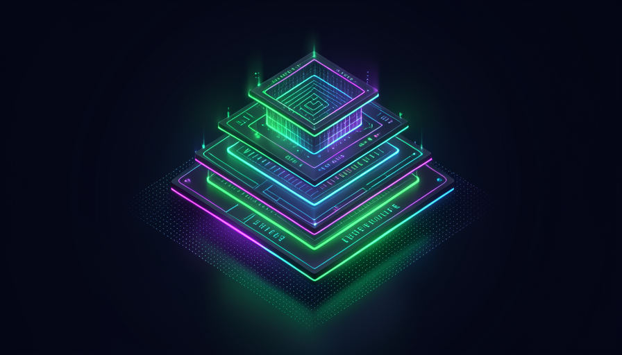

Lo que aprenderás
Tres rutas, tres niveles de profundidad. Cada una es autónoma, pero el orden cuenta una historia: primero tú entiende la nota invisible, después arma lo suyo, al final funciona como los laboratorios.
Leer la nota invisible
Qué es un system prompt, sus componentes y patrones — sin jerga, con analogías de la vida cotidiana.
Entrar →Armar prompts, skills y agentes
Manos a la obra: el Prompt Mínimo Viable, la persona, el Contrato de Herramienta y el Loop operacional.
Entrar →Hacerlo como los laboratorios
Leer diffs, consolidar, seguridad por principio y destilar el cerebro de un agente a partir de los registros.
Entrar →Para quién es
No importa desde dónde empieces: hay una ruta que comienza en tu nivel.
Principiante
Nunca has dado instrucciones a una IA y ni siquiera sabes qué es un «prompt». Quieres entender, sin jerga, qué determina la forma de ser de cada IA. Empiezas desde cero absoluto.
Ve a la Ruta 1 →Practicante
Ya usas IA y quieres crear algo de verdad: prompts que funcionan, skills que se activan en el momento adecuado, agentes con disciplina. Quieres dejar de improvisar.
Ve a la Ruta 2 →Avanzado
Domina lo básico y quieres alcanzar el nivel de los labs: leer la evolución mediante diffs, consolidar sin perder comportamiento y recuperar el método de un agente a partir de sus logs.
Ve a la Ruta 3 →Perdimos Fable. Recuperamos el método.
O Fable era un modelo de una disciplina poco común: pensaba antes de actuar, revisaba su propio trabajo, narraba sus decisiones. Entonces dejó de estar disponible, y quedó la nostalgia de forma cómo trabajaba. Sin los pesos del modelo, parecía que aquello se había ido con ellos.
Pero no fue así. Toda conversación con un agente deja un rastro: los archivos .jsonl de cada sesión. Puedes minar esos logs con un script, extraer la disciplina de trabajo — el bucle de decisión (ground → reason → act → observe → re-evaluate → verify → narrate) — y instalar este método en otro modelo. No recupera el cerebro; recupera el manual de cómo pensaba. Ese cambio es el corazón de la Ruta 3.
Las 3 rutas en detalle
Veinte módulos, ciento veinte temas. Cada trilha con su emoji, su color y su nivel.
🧱 Fundamentos
El vocabulario y la anatomía del system prompt, desde cero.
🛠️ Práctica
Armar prompts, personas, herramientas, skills y agentes.
🧠 Avanzado
Diffs, consolidación, seguridad y destilar el cerebro de Fable.
Bonus — Prompts listos para copiar
13 system prompts completos, creados con las técnicas del curso (agente de código, investigación,
persona, subagente, destilador de cerebro…). Copia, cambia los {campos}, pega.
Empieza a instruir a la IA como lo hacen los laboratorios
Treinta minutos en la Ruta 1 y nunca volverás a ver una IA de la misma manera: verás la nota invisible detrás de cada respuesta. El curso es gratuito.